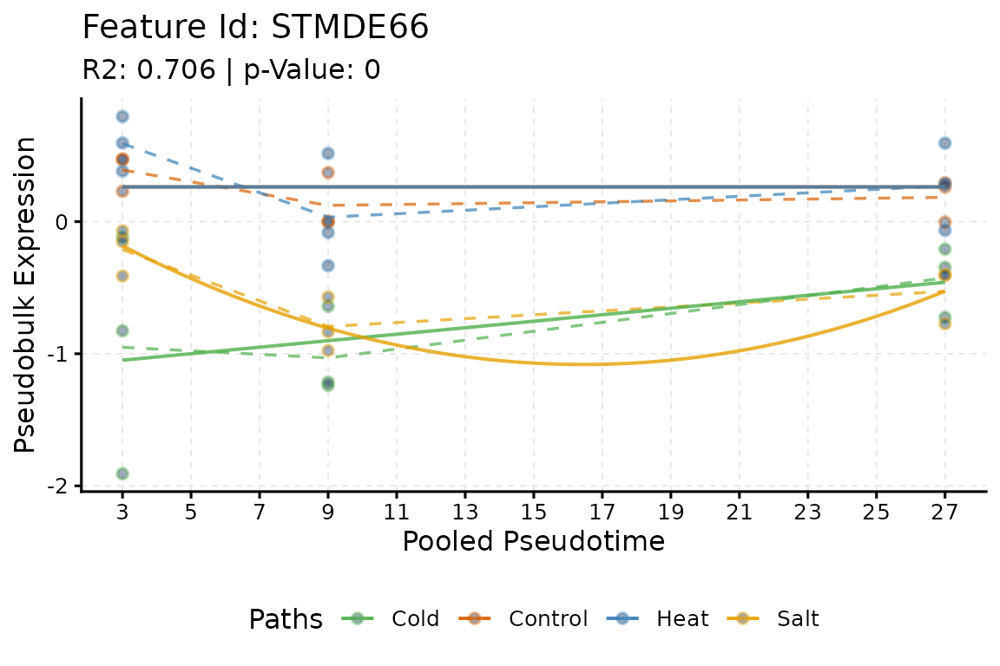

maSigPro and the ScMaSigPro class
Priyansh Srivastava
Source:vignettes/masigpro-and-class.Rmd
masigpro-and-class.RmdAbstract
The first part of this vignette describes the ScMaSigPro object: what each slot holds, the accessors that read it and how to bring an object saved by an earlier version up to date. The second part runs the maSigPro workflow and the scMaSigPro workflow side by side on the data of maSigPro, with a Gaussian and a negative binomial model, and checks that their results are identical.
The ScMaSigPro object
Two resolutions and the results
An analysis works at two resolutions: the cells, with their
pseudotime and path, and the pseudotime bins whose pseudo-bulk counts
the models are fitted to. A ScMaSigPro object holds both as
SingleCellExperiment objects, one per slot, because their
columns differ: altExp() needs the columns of the main
experiment, and bins kept in metadata() would lose the
checks and the accessors of an experiment. The other slots hold the
results of the steps, which have no place in a
SingleCellExperiment, and a record of every setting. Every
step returns the object with one more slot filled, and checks it with
validObject().
| Slot | Class | Filled by | Read with |
|---|---|---|---|
Sparse |
SingleCellExperiment |
as_scmp(), create_scmp()
|
cSparse(), eSparse()
|
Dense |
SingleCellExperiment |
sc.squeeze(),
sc.restruct()
|
cDense(), eDense()
|
Design |
MatrixDesign |
sc.set.poly() |
predictors(), pathAssign(),
showPoly()
|
Profile |
VariableProfiles |
sc.p.vector() |
scmpResults() |
Estimate |
Estimates |
sc.t.fit() |
showSol(), showCoeff(),
showGroupCoeff(), showTS(),
showInflu(), showSigProf()
|
Significant |
Significant |
sc.filter(),
sc.cluster.trend()
|
scmpResults() |
Parameters |
ParameterConfig |
every step | showParams() |
version |
character |
the creation of the object | updateObject() |
The bundled object scmp.ob holds the analysis of the Quick
start vignette; printing it summarises every step that has run:
library(scMaSigPro)
data("scmp.ob", package = "scMaSigPro")
scmp.ob
#> Class: ScMaSigProClass
#> nCells: 200
#> nFeatures: 100
#> Pseudotime Range: 1 100
#> Branching Paths: Path2, Path1
#> Binned Pseudotime: 1-8(Range), 4.5(Mean),
#> Number of bins-> Path1: 8 Path2: 8
#> Average bin Size-> Path1: 12 Path2: 13
#> Polynomial Order: 1
#> No. of Significant Profiles: 50
#> No. of Influential Features: 8Cells and bins
cSparse() and cDense() return the metadata
of the cells and of the bins as data frames, and eSparse()
and eDense() their counts, by default the
counts and bulk.counts assays. Each has a
replacement form (cSparse<- and so on) that checks the
new value and the object.
head(cSparse(scmp.ob)[, c("Pseudotime", "Path", "scmp_binned_pseudotime")], 3)
#> Pseudotime Path scmp_binned_pseudotime
#> Cell1 42 Path2 4
#> Cell2 41 Path1 4
#> Cell3 23 Path1 2
bins <- cDense(scmp.ob)
head(bins[, c("Path", "scmp_binned_pseudotime", "scmp_bin_size")], 3)
#> Path scmp_binned_pseudotime scmp_bin_size
#> Path1_bin_1 Path1 1 14
#> Path1_bin_2 Path1 2 15
#> Path1_bin_3 Path1 3 7
eSparse(scmp.ob)[1:3, 1:4]
#> Cell1 Cell2 Cell3 Cell4
#> Gene1 0 2 1 2
#> Gene2 436 371 432 427
#> Gene3 35 13 17 18
eDense(scmp.ob)[1:3, 1:4]
#> Path1_bin_1 Path1_bin_2 Path1_bin_3 Path1_bin_4
#> Gene1 16 24 11 31
#> Gene2 6335 7337 3375 9161
#> Gene3 201 245 105 216The names of the columns are kept in the parameters
(ptime_col, path_col, bin_col and
others), which showParams() lists.
The design
predictors() returns the design of the model, one row
per bin and one column per term besides the intercept;
pathAssign() the binned pseudotime and the path of each
bin; showPoly() the model as a formula.
showPoly(scmp.ob)
#> [1] "beta0 + beta1*Path2vsPath1 + beta2*scmp_binned_pseudotime + beta3*scmp_binned_pseudotimexPath2"
head(predictors(scmp.ob), 3)
#> Path2vsPath1 scmp_binned_pseudotime scmp_binned_pseudotimexPath2
#> Path1_bin_1 0 1 0
#> Path1_bin_2 0 2 0
#> Path1_bin_3 0 3 0
head(pathAssign(scmp.ob), 3)
#> scmp_binned_pseudotime Replicate Path1 Path2
#> Path1_bin_1 1 1 1 0
#> Path1_bin_2 2 2 1 0
#> Path1_bin_3 3 3 1 0The results
scmpResults() gathers the results of every gene in one
table: the test of the full model, the selected model, the gene lists
and the cluster. scmpToRowData() writes the same columns
into the rowData() of a SingleCellExperiment.
The show*() readers return the parts of the selected
models: showSol() their p-values and R-squared,
showCoeff() their coefficients,
showGroupCoeff() the coefficients of the polynomial of each
path, showTS() the t statistics, showInflu()
the bins with influential observations and showSigProf()
the pseudo-bulk counts of the genes with a selected model.
head(scmpResults(scmp.ob), 3)
#> DataFrame with 3 rows and 9 columns
#> p_value adj_p_value non_flat model_p_value r_squared influential
#> <numeric> <numeric> <logical> <numeric> <numeric> <logical>
#> Gene1 2.21646e-01 3.46322e-01 FALSE NA NA FALSE
#> Gene2 1.30835e-13 4.84576e-13 TRUE 1.60139e-09 0.726015 FALSE
#> Gene3 2.51249e-24 1.14204e-23 TRUE 3.98589e-20 0.873163 FALSE
#> sig_Path2vsPath1 sig_Path1 cluster
#> <logical> <logical> <integer>
#> Gene1 FALSE FALSE NA
#> Gene2 TRUE FALSE 1
#> Gene3 TRUE TRUE 2
head(showSol(scmp.ob), 3)
#> p-value R-squared p.valor_beta0 p.valor_Path2vsPath1
#> Gene2 1.601390e-09 0.7260152 3.214402e-32 NA
#> Gene3 3.985890e-20 0.8731628 1.206436e-18 NA
#> Gene4 1.230465e-66 0.9553623 3.898555e-28 NA
#> p.valor_scmp_binned_pseudotime p.valor_scmp_binned_pseudotimexPath2
#> Gene2 NA 2.584140e-05
#> Gene3 1.880938e-06 6.631152e-07
#> Gene4 NA 1.143322e-10
head(showGroupCoeff(scmp.ob), 3)
#> Path1_beta0 Path1_beta1 Path2_beta0 Path2_beta1
#> Gene2 8.681729 0.0000000 8.681729 -0.02510003
#> Gene3 5.385045 -0.1262038 5.385045 -0.01183913
#> Gene4 6.886018 0.0000000 6.886018 0.10643888The settings
showParams() lists every setting that the steps used,
and the steps take their defaults from them: sc.t.fit()
uses the family, the link and the level of sc.p.vector()
unless told otherwise.
showParams(scmp.ob)
#> parameters value
#> 1 bin_ptime_col scmp_binned_pseudotime
#> 2 path_prefix Path
#> 3 root_label root
#> 4 ptime_col Pseudotime
#> 5 selection_method backward
#> 6 bin_method Sturges
#> 7 path_col Path
#> 8 bin_col scmp_bin
#> 9 bin_size_col scmp_bin_size
#> 10 bin_mem_col scmp_bin_members
#> 11 anno_col cell_type
#> 12 g 100
#> 13 p_value 0.05
#> 14 min_na 6
#> 15 mt_correction BH
#> 16 link log
#> 17 epsilon 1e-08
#> 18 offset TRUE
#> 19 max_it 100
#> 20 poly_degree 1
#> 21 cluster_method hclust
#> 22 use_dim col
#> 23 fill_na zero
#> 24 min_counts 0
#> 25 min_bins_expressed 0
#> 26 test chisq
#> 27 distribution Negative Binomial(10)Objects from earlier versions
The version slot records the version of scMaSigPro that
created an object. An object saved by an earlier version, with
saveRDS() or save(), may lack a slot or a
setting that the current version needs; the steps then stop and ask for
updateObject(), which adds what is missing and says what it
changed:
scmp_ob <- updateObject(readRDS("analysis.rds"))A current object is returned unchanged:
identical(updateObject(scmp.ob), scmp.ob)
#> [1] TRUE
validObject(scmp.ob)
#> [1] TRUEEquivalence with maSigPro
scMaSigPro fits the models of maSigPro (Conesa et al. 2006; Nueda et al. 2014) to pseudo-bulk counts. Its design, tests, stepwise selection and gene lists are implemented anew, without calling maSigPro, and with the settings of maSigPro, without the offset, they give the same results. This part runs both packages on the data of maSigPro and checks that every result is identical. It runs when maSigPro is installed:
BiocManager::install("maSigPro")A Gaussian model on microarray data
data.abiotic holds the expression of 1000 genes in a
time-course microarray experiment on potato plants: a control and three
abiotic stresses (cold, heat and salt), at 3, 9 and 27 hours, with three
replicates each, 36 samples in all. edesign.abiotic
describes the samples with one 0/1 column per group; scMaSigPro takes
one column with the group instead.
library(maSigPro)
data("data.abiotic", "edesign.abiotic", package = "maSigPro")
head(edesign.abiotic, 3)
#> Time Replicate Control Cold Heat Salt
#> Control_3H_1 3 1 1 0 0 0
#> Control_3H_2 3 1 1 0 0 0
#> Control_3H_3 3 1 1 0 0 0
samples <- as.data.frame(edesign.abiotic)
groups <- c("Control", "Cold", "Heat", "Salt")
samples$Group <- groups[max.col(samples[, groups], ties.method = "first")]
samples <- samples[, c("Time", "Replicate", "Group")]
head(samples, 3)
#> Time Replicate Group
#> Control_3H_1 3 1 Control
#> Control_3H_2 3 1 Control
#> Control_3H_3 3 1 ControlEach sample is a bin of its own (use_as_bin = TRUE), so
sc.squeeze() is not needed. The design of
sc.set.poly() is that of
make.design.matrix():
scmp_ab <- create_scmp(
counts = as.matrix(data.abiotic),
cell_data = samples,
ptime_col = "Time",
path_col = "Group",
use_as_bin = TRUE
)
scmp_ab <- sc.set.poly(scmp_ab, poly_degree = 2)
design <- make.design.matrix(edesign.abiotic, degree = 2)
stopifnot(
identical(predictors(scmp_ab), design$dis),
all.equal(pathAssign(scmp_ab), as.matrix(design$edesign))
)sc.p.vector() with the Gaussian family, the identity
link and no offset is p.vector(), and
sc.t.fit() is T.fit(). maSigPro prints its
progress; capture.output() keeps it out of the
vignette.
invisible(capture.output(
fit <- p.vector(data.abiotic, design,
Q = 0.05, MT.adjust = "BH", min.obs = 20
)
))
scmp_ab <- sc.p.vector(scmp_ab,
family = gaussian(), link = "identity", offset = FALSE,
min_na = 20, epsilon = 1e-5, max_it = 25, verbose = FALSE
)
invisible(capture.output(
tstep <- T.fit(fit, step.method = "backward", alfa = 0.05)
))
scmp_ab <- sc.t.fit(scmp_ab, verbose = FALSE)
res <- scmpResults(scmp_ab)
fitted <- rownames(fit$p.vector)
stopifnot(
identical(res[fitted, "p_value"], unname(fit$p.vector[, 1])),
identical(res[fitted, "adj_p_value"], fit$p.adjusted),
identical(rownames(res)[res$non_flat], rownames(fit$SELEC)),
identical(showSol(scmp_ab), tstep$sol),
identical(showCoeff(scmp_ab), tstep$coefficients),
identical(showGroupCoeff(scmp_ab), tstep$group.coeffs),
identical(as.data.frame(showTS(scmp_ab)), tstep$t.score)
)
sum(res$non_flat)
#> [1] 398The gene lists of sc.filter() are those of
get.siggenes(); maSigPro pads its lists with blanks to the
same length:
sigs <- get.siggenes(tstep, rsq = 0.6, vars = "groups")
scmp_ab <- sc.filter(scmp_ab, rsq = 0.6, vars = "groups")
res <- scmpResults(scmp_ab)
for (list in colnames(sigs$summary)) {
expected <- sigs$summary[[list]]
expected <- expected[expected != " "]
found <- rownames(res)[res[[paste0("sig_", list)]]]
stopifnot(identical(found, expected))
}
colSums(as.data.frame(res[, grep("^sig_", colnames(res))]))
#> sig_ColdvsControl sig_HeatvsControl sig_SaltvsControl sig_Control
#> 223 130 191 86plotTrend() plays the part of PlotGroups()
of maSigPro: the expression of one gene in each group over time, with
the fitted curve of each group.
plotTrend(scmp_ab, "STMDE66",
logs = FALSE, pseudoCount = 0, summary_mode = "mean",
significant = FALSE, lines = TRUE
)
A negative binomial model on counts
NBdata holds counts of 100 genes simulated with a
negative binomial distribution, in two groups with six time points and
three replicates each; the first 20 genes change over time. With the
negative binomial family, theta 10 and no offset,
sc.p.vector() and sc.t.fit() are
p.vector(counts = TRUE) and T.fit():
data("NBdata", "NBdesign", package = "maSigPro")
samples <- as.data.frame(NBdesign)
samples$Group <- c("Group.1", "Group.2")[
max.col(samples[, 3:4], ties.method = "first")
]
samples <- samples[, c("Time", "Replicates", "Group")]
nb_family <- MASS::negative.binomial(theta = 10)
design <- make.design.matrix(NBdesign, degree = 2)
invisible(capture.output(
fit <- p.vector(NBdata, design,
Q = 0.05, MT.adjust = "BH", min.obs = 6, counts = TRUE, theta = 10
)
))
invisible(capture.output(
tstep <- T.fit(fit,
step.method = "backward", alfa = 0.05, family = nb_family,
epsilon = 1e-5
)
))
scmp_nb <- create_scmp(
counts = as.matrix(NBdata),
cell_data = samples,
ptime_col = "Time",
path_col = "Group",
use_as_bin = TRUE
)
scmp_nb <- sc.set.poly(scmp_nb, poly_degree = 2)
scmp_nb <- sc.p.vector(scmp_nb,
family = nb_family, offset = FALSE, min_na = 6, epsilon = 1e-5,
max_it = 25, verbose = FALSE
)
scmp_nb <- sc.t.fit(scmp_nb, verbose = FALSE)
res <- scmpResults(scmp_nb)
stopifnot(
identical(res$p_value, unname(fit$p.vector[, 1])),
identical(res$adj_p_value, fit$p.adjusted),
identical(rownames(res)[res$non_flat], rownames(fit$SELEC)),
identical(showSol(scmp_nb), tstep$sol),
identical(showCoeff(scmp_nb), tstep$coefficients)
)
sum(res$non_flat)
#> [1] 21What scMaSigPro adds
On single cells, scMaSigPro adds what the cells need before the model
of maSigPro applies (Srivastava et al.
2024): the bins along pseudotime (sc.squeeze()), the
shared root (sc.restruct()), the size-factor offset for the
bins, the choice of the reference path, and the estimation of theta. It
also fits the genes in parallel with BiocParallel, offers the F test of
the full model, and returns the results as a DataFrame or
in the rowData() of the data. The Model
and tuning vignette describes these settings.
Session information
sessionInfo()
#> R version 4.6.2 (2026-10-29)
#> Platform: x86_64-pc-linux-gnu
#> Running under: Ubuntu 24.04.5 LTS
#>
#> Matrix products: default
#> BLAS: /usr/lib/x86_64-linux-gnu/openblas-pthread/libblas.so.3
#> LAPACK: /usr/lib/x86_64-linux-gnu/openblas-pthread/libopenblasp-r0.3.26.so; LAPACK version 3.12.0
#>
#> locale:
#> [1] LC_CTYPE=C.UTF-8 LC_NUMERIC=C LC_TIME=C.UTF-8
#> [4] LC_COLLATE=C.UTF-8 LC_MONETARY=C.UTF-8 LC_MESSAGES=C.UTF-8
#> [7] LC_PAPER=C.UTF-8 LC_NAME=C LC_ADDRESS=C
#> [10] LC_TELEPHONE=C LC_MEASUREMENT=C.UTF-8 LC_IDENTIFICATION=C
#>
#> time zone: UTC
#> tzcode source: system (glibc)
#>
#> attached base packages:
#> [1] stats graphics grDevices utils datasets methods base
#>
#> other attached packages:
#> [1] maSigPro_1.84.0 scMaSigPro_0.99.0 BiocStyle_2.40.0
#>
#> loaded via a namespace (and not attached):
#> [1] sass_0.4.10 generics_0.1.4
#> [3] SparseArray_1.12.3 lattice_0.23-1
#> [5] digest_0.6.39 RColorBrewer_1.1-3
#> [7] evaluate_1.0.5 grid_4.6.2
#> [9] bookdown_0.48 fastmap_1.2.0
#> [11] jsonlite_2.0.0 Matrix_1.7-6
#> [13] mclust_6.1.3 BiocManager_1.30.27
#> [15] SingleCellExperiment_1.34.0 scales_1.4.0
#> [17] codetools_0.2-20 textshaping_1.0.5
#> [19] jquerylib_0.1.4 abind_1.4-8
#> [21] cli_3.6.6 rlang_1.3.0
#> [23] XVector_0.52.0 Biobase_2.72.0
#> [25] withr_3.0.3 DelayedArray_0.38.2
#> [27] cachem_1.1.0 yaml_2.3.12
#> [29] otel_0.2.0 S4Arrays_1.12.1
#> [31] tools_4.6.2 parallel_4.6.2
#> [33] BiocParallel_1.46.0 ggplot2_4.0.3
#> [35] SummarizedExperiment_1.42.0 BiocGenerics_0.58.1
#> [37] vctrs_0.7.3 R6_2.6.1
#> [39] matrixStats_1.5.0 stats4_4.6.2
#> [41] lifecycle_1.0.5 Seqinfo_1.2.0
#> [43] S4Vectors_0.50.3 fs_2.1.0
#> [45] admisc_0.41 IRanges_2.46.0
#> [47] MASS_7.3-66 ragg_1.5.2
#> [49] desc_1.4.3 gtable_0.3.6
#> [51] pkgdown_2.2.1 bslib_0.12.0
#> [53] glue_1.8.1 systemfonts_1.3.2
#> [55] xfun_0.62 GenomicRanges_1.64.0
#> [57] MatrixGenerics_1.24.0 knitr_1.52
#> [59] farver_2.1.2 htmltools_0.5.9
#> [61] labeling_0.4.3 rmarkdown_2.32
#> [63] compiler_4.6.2 S7_0.2.2
#> [65] venn_1.13